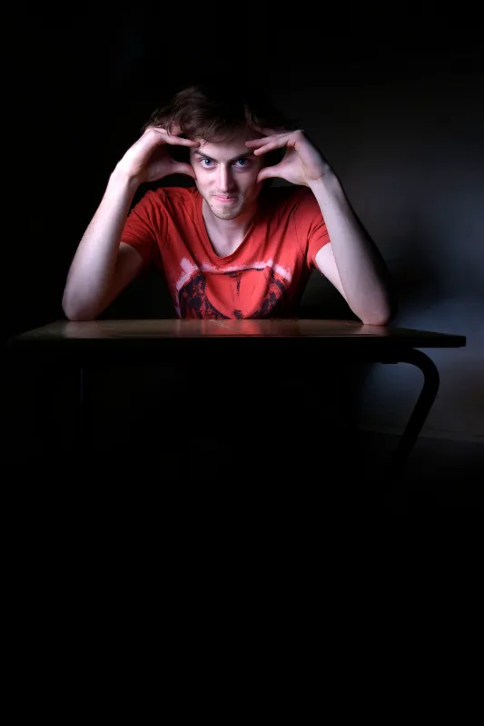
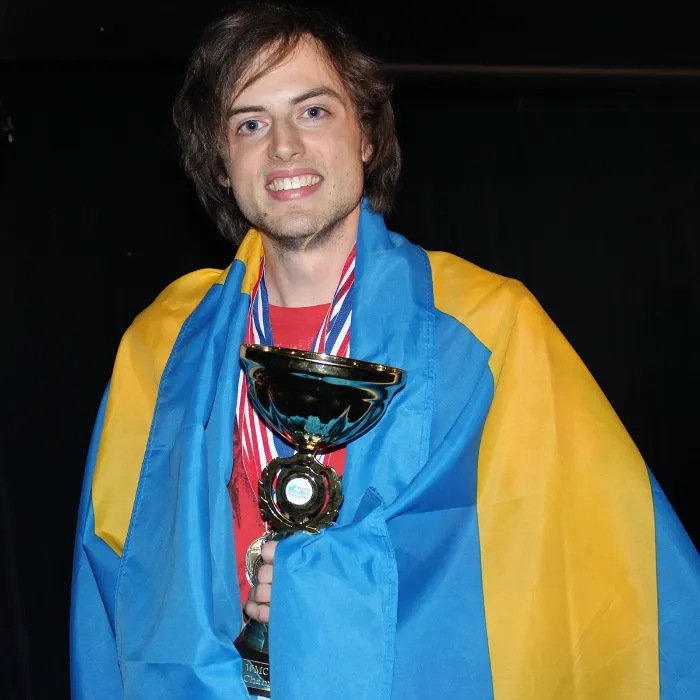
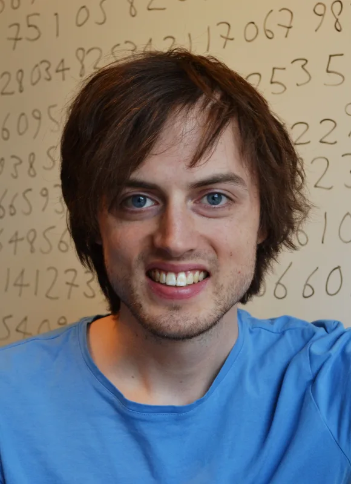
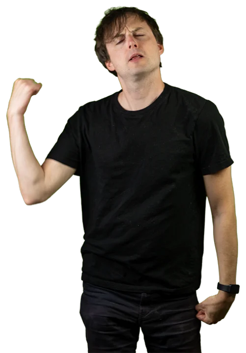

2018
Talang, TV4
Golden buzzer av David Batra – efter att ha lärt sig hela publikens namn. Hela vägen till final.
Golden buzzer · Finalist
Prolog · En berättelse i fem kapitel
Tvåfaldig världsmästare i minne · Föreläsare · Frågesportsnörd
Det här är berättelsen om ett vanligt minne som blev världens bästa.
Jag tävlar i att minnas saker – och i att säga dem snyggt. Däremellan bygger jag gratis appar som gör det lättare att lära sig.

Scrolla — berättelsen börjar 2013
Jag heter Jonas von Essen och 2013 blev jag – som förste svensk någonsin – världsmästare i minne. 2014 försvarade jag titeln. Sedan dess har jag gjort det till mitt jobb att visa att hjärnan klarar mer än man tror: i TV-studior, föreläsningssalar, böcker och appar.
Jag har memorerat 100 000 decimaler av pi, lärt mig hela Talang-publikens namn och vunnit en miljon på Postkodmiljonären. När jag inte tävlar i att minnas saker tävlar jag i att formulera dem – som färsk svensk mästare i poetry slam och Göteborgsmästare i ordvitsar.
Kapitel 01 · 2013–2014
En student från Göteborg åker till världsminnesmästerskapen. Ingen svensk har någonsin vunnit.
London · Världsminnesmästerskapen
Tio grenar. Tusentals siffror, kortlekar och namn. När poängen räknats samman står göteborgaren överst.
Haikou, Kina · Titelförsvaret
Ett VM-guld kan vara tur. Två är det inte. Titeln försvaras – världsmästare igen.
Milstolpe · 2× VM-guld
Sveriges förste världsmästare i minne. Och än så länge den ende – gånger två.

Kapitel 02 · 2018–2023
Vad gör man med ett världsminne? Man lär sig hela Talang-publikens namn, till att börja med.
Golden buzzer av David Batra – efter att ha lärt sig hela publikens namn. Hela vägen till final.
Golden buzzer · Finalist
Rätt svar på miljonfrågan. En av endast 13 personer genom tiderna i Sverige – och den enda som firade stående på stolen.
1 000 000 kr · En av 13 genom tiderna

Vann hela programmet. Femteklassarna var hyggliga förlorare.
Besegrade expertpanelen på deras egen planhalva.
Vann sin utmaning – bland annat 200 numrerade valnötter.
Kapitel 03 · 2020
Hundra tusen decimaler. Memorerade under promenader, verifierade siffra för siffra – och upplästa tills rekordet satt.

Först i världen att klara ett verifierat test på alla 100 000 decimaler (2020).
Europarekord i uppläsning: 24 063 decimaler i rad, utan ett enda fel.
Handboken i minnesteknik – med snöret runt fingret på omslaget.
Minnesteknikerna för yngre läsare – och deras föräldrar.
Alla 100 000 decimaler, svart på vitt. Världens mest nischade kioskvältare.
Kapitel 04 · Nu
Tre appar, noll kronor. Jag bygger dem för att det är kul – och för att bra inlärning inte ska kosta.

Lär dig alla världens länder på en snurrbar jordglob där varje land är ett eget litet konstverk. Utforska, quizza och res jorden runt – med minnesknep för varje land.
Öppna appen
Gratis träning inför högskoleprovet: simulera gamla prov på tid, videogenomgångar och minnestekniker. Från Sveriges kanske mest rutinerade HP-skrivare.
Öppna appen
Gångertabellen är lättare än den ser ut: med rätt knep är det bara sex tal kvar att memorera. Quiz, minnesbilder och smart repetition – utan inloggning.
Öppna appenKapitel 05 · Ditt drag
Onlinekursen i minnesteknik: lär dig metoderna jag använder – minnespalats, siffersystem och namnknep – i din egen takt, hur många gånger du vill.
Till kursenkurs.jonasvonessen.se · samma metoder som tog hem två VM-guld

Epilog · 2026 →
Berättelsen fortsätter – numera även i versmått och ordvitsformat.
Svensk mästare i poetry slam.
Göteborgsmästare i ordvitsar – och klar för SM-final.
Svensk mästare i pubquiz med laget ”Glenns över sjö och strand”.
Skriv en rad om du vill boka Jonas till ett oförglömligt event – eller bara säga hej. Svar utlovas; jag glömmer som bekant aldrig ett meddelande.